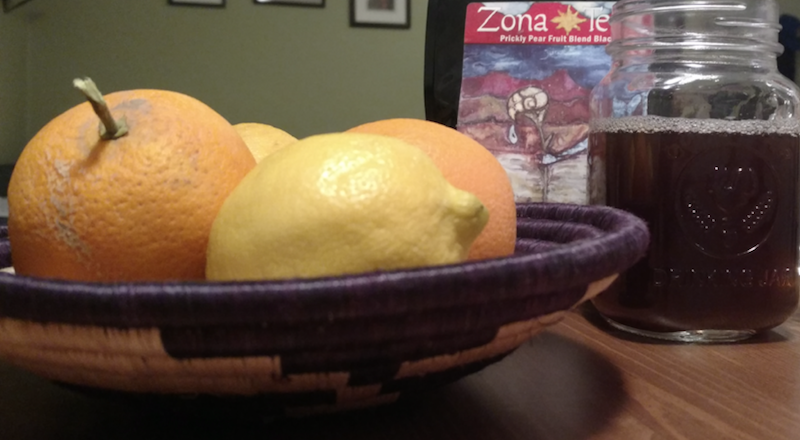

March 31, 2018
Staying Green in a Brown Desert – Tip #3

Editor’s Note: Evan Gorelick (Finley’s cousin) and his fiancé Katie O’Connell moved to Phoenix, AZ in 2017. Staying green in the brown desert — known for its lack of natural water — hasn’t been easy. But they’ve found ways to make it work.
How far does your food have to travel to get from a farm to your plate?
If you’re buying conventionally produced foods, that distance is estimated to be 1,500 miles. In fact, a study by the C.S. Mott Group for Sustainable Food Systems uncovered that “… conventional food distribution was responsible for 5 to 17 times more CO2 than local and regionally produced foods.”
The biggest challenge to eating local in the desert comes from our dependency on irrigation. Luckily, there are a few farms such as the Phoenix-based True Garden that use vertical aeroponic farming and solar power to “… drastically reduce the region’s agricultural water consumption while making local, living produce available year-round.”
Another perk of eating local: trying new ingredients. So far Evan and Katie have brewed prickly pear ice tea, sweetened with killer bee honey. Mesquite, a flavor familiar to many, comes from the mesquite trees that grow in the Sonoran desert.